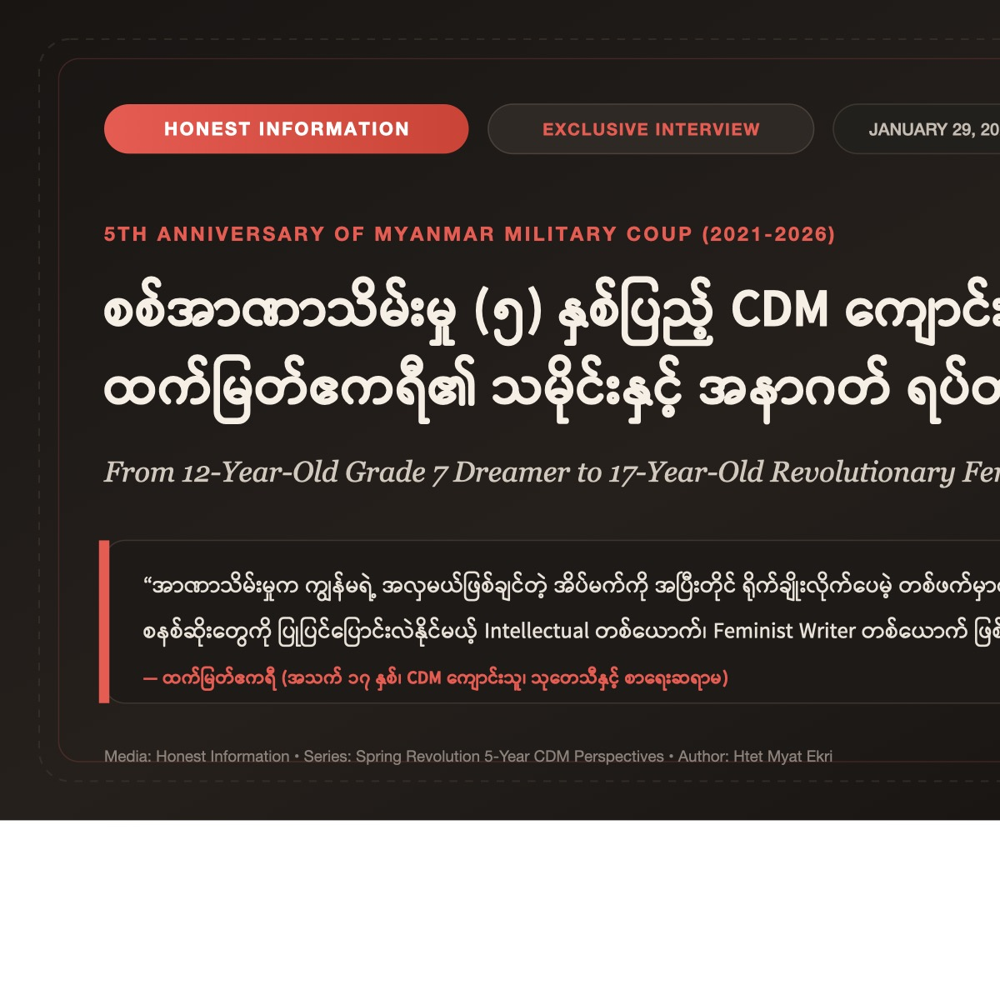
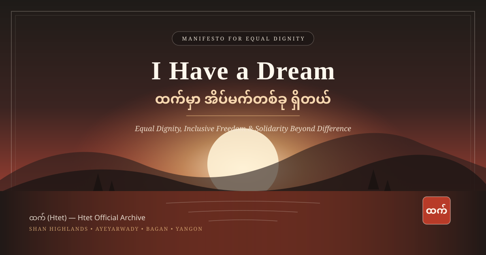
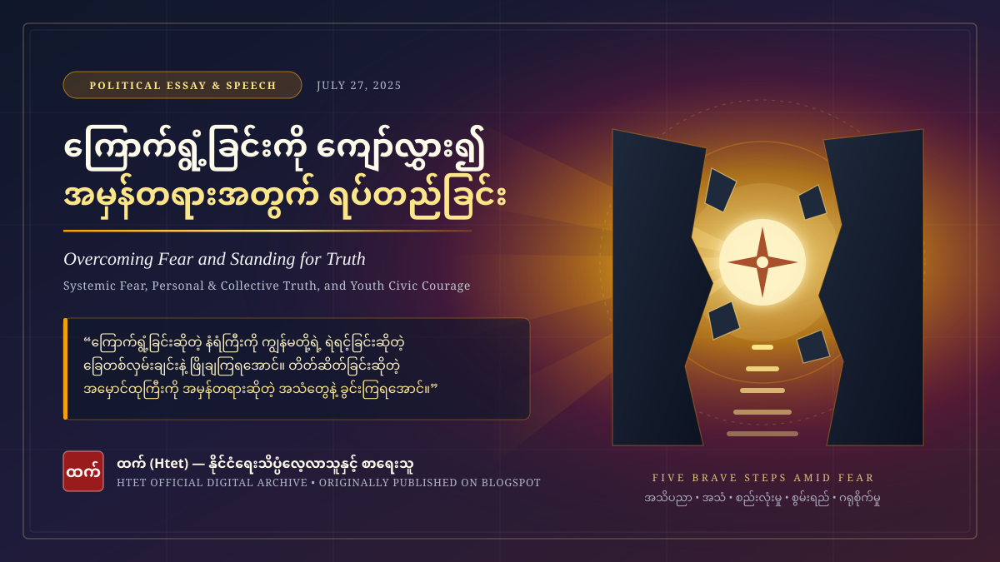
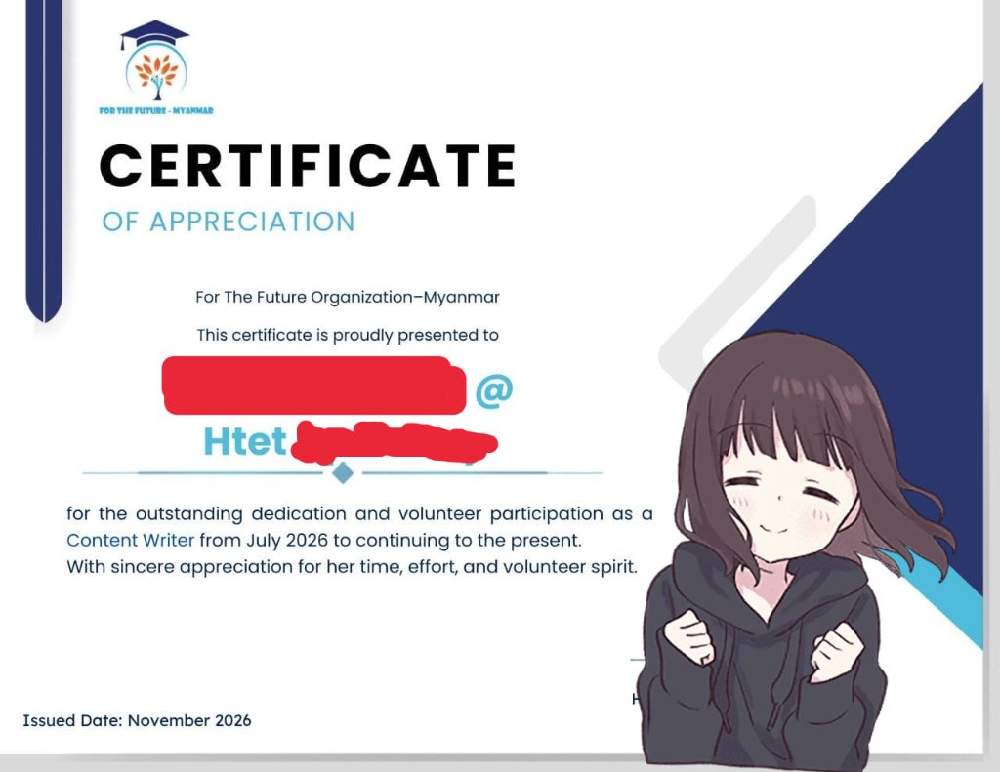
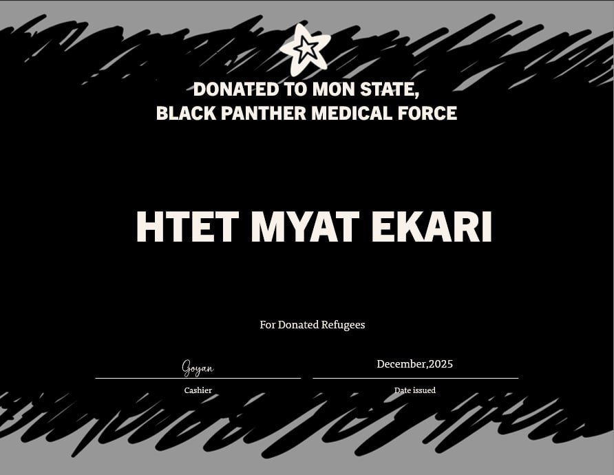
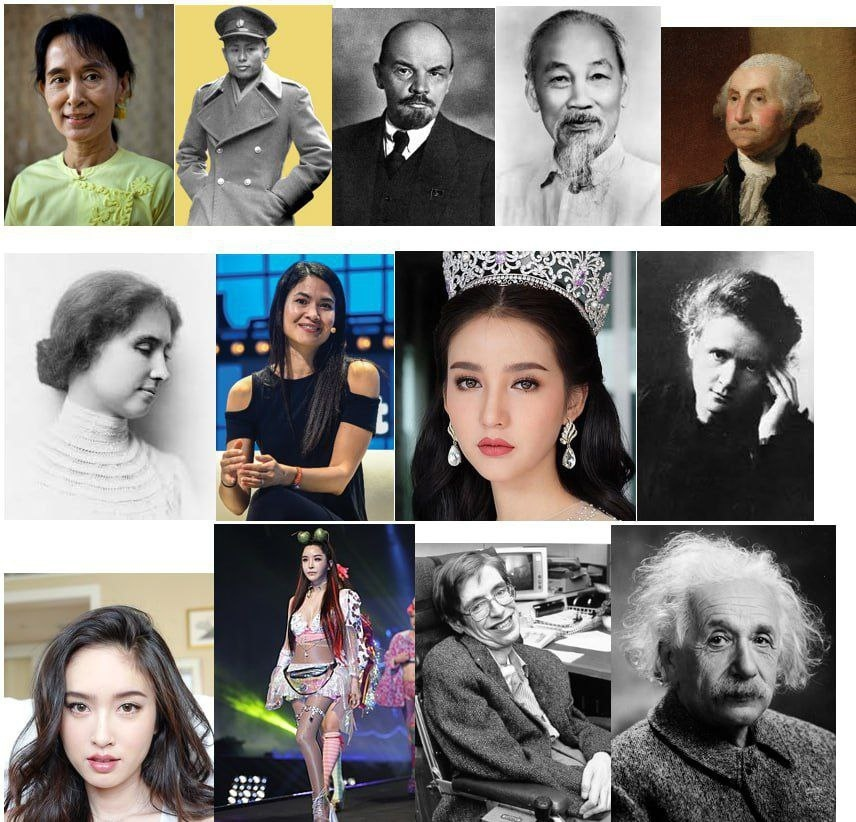

Htet (ထက်)
/ ထက်မြတ်ဧကရီHtet Myat Ekri • She/Her • Burmese Transgirl Writer & Public Intellectual
မြန်မာလူငယ် Transwoman စာရေးဆရာမ၊ နိုင်ငံရေးဒဿနိကဗေဒ သုတေသီနှင့် လူမှုတရားမျှတမှု တက်ကြွလှုပ်ရှားသူ ထက် (ထက်မြတ်ဧကရီ)။ ၂၀၂၁ စစ်အာဏာသိမ်းမှု၏ အမှောင်ထုကာလအတွင်း အသက် ၁၂ နှစ်အရွယ် Grade 7 ကျောင်းသူဘဝမှ စတင်၍ ကိုယ်တိုင်လေ့လာသင်ယူမှုဖြင့် အမေရိကန် GED ကို အောင်မြင်ခဲ့ပြီး၊ လွတ်လပ်သော သုတေသီအဖြစ် မြန်မာ့နွေဦးတက္ကသိုလ် (MNOU) ၃ နှစ်ပြည့် နှစ်လည်မဂ္ဂဇင်း ရွေးချယ်ခံဆောင်းပါးနှင့် ဂုဏ်ပြုဆု (၂၀၂၅) ကို ရရှိခဲ့သည်။
စာမျက်နှာ ၁၇၁ မျက်နှာပါ မူလဒဿန ကျမ်းကြီး 'Commufemocratism လမ်းစဉ်' နှင့် စာပေဒဿနစာအုပ် 'ဖြည်းဖြည်းလျှောက်သူတို့၏ လမ်းမ' တို့ကို ကိုယ်တိုင် ရေးသားပြုစုခဲ့သူ ဖြစ်ပြီး၊ အမျိုးသမီးနှင့် LGBTQIA+ အခွင့်အရေး ပလက်ဖောင်း Women Nation နှင့် စာအုပ်ပေါင်း ၁,၅၂၂+ အုပ်ကျော်ပါဝင်သော IdeaHub Public Digital Library တို့ကို တည်ထောင်ခဲ့သူ ဖြစ်ပါသည်။
နိုင်ငံတကာ သုတေသန၊ ဒဿနနှင့် စာပေမော်ကွန်း မှတ်တမ်းချုပ်
နိုင်ငံရေးဒဿနိကဗေဒ (Commufemocratism)၊ လူမှုတန်းတူညီမျှရေး လှုပ်ရှားမှုများနှင့် စာပေထုတ်ဝေမှုများအား နိုင်ငံတကာ စာပေလောကနှင့် သုတေသီများ လွတ်လပ်စွာ လေ့လာစိစစ်နိုင်ရန် ပြုစုထားသော ၅ ဘာသာသုံး ပညာရပ်ဆိုင်ရာ မှတ်တမ်းချုပ်။
၁။ အခြေခံ သီအိုရီ မဏ္ဍိုင်ကြီး ၃ ရပ်
စစ်အာဏာရှင်စနစ်၊ အရင်းရှင်လက်ဝါးကြီးအုပ်မှုနှင့် ဖိုဝါဒကြီးစိုးမှုတို့ကို တပြိုင်နက်တည်း အမြစ်ဖြတ်နိုင်ရေးအတွက် မဏ္ဍိုင် ၃ ရပ်ကို ပေါင်းစပ်ဖော်ထုတ်ထားခြင်း ဖြစ်ပါသည် -
- တန်းတူညီမျှသော ကွန်မြူနစ်ဝါဒ / လူထုဘုံပိုင်စနစ် (Egalitarian Communism): သယံဇာတနှင့် ထုတ်လုပ်မှုအင်အားစုများကို စစ်ဗိုလ်ချုပ်နှင့် ခရိုနီလက်ဝါးကြီးအုပ်မှုမှ ပြည်သူ့ဘုံပိုင်အဖြစ် ပြောင်းလဲခြင်းနှင့် အခြေခံလူမှုဖူလုံရေး အပြည့်အဝပေးခြင်း။
- အစွန်းရောက်နှင့် ဘက်ပေါင်းစုံ ဖီမင်နစ်ဝါဒ (Radical & Intersectional Feminism): ဖိုဝါဒနှင့် ဘုန်းအတွေးအခေါ်ကို တိုက်ဖျက်၍ အမျိုးသမီးများနှင့် လိင်စိတ်ခံယူမှုကွဲပြားသူ (LGBTQ+) များ၏ လူ့အခွင့်အရေးနှင့် ဂုဏ်သိက္ခာကို CEDAW စံနှုန်းများနှင့်အညီ အပြည့်အဝ ကာကွယ်စောင့်ရှောက်ခြင်း။
- တိုက်ရိုက်ပါဝင်သော ဒီမိုကရေစီ (Direct Participatory Democracy): ဗဟိုဦးစီးအာဏာရှင်စနစ်ကို ဖျက်သိမ်းပြီး ပြည်သူ့ရပ်ရွာကောင်စီများမှတစ်ဆင့် အောက်ခြေလူထု တိုက်ရိုက်ဆုံးဖြတ်အုပ်ချုပ်ခွင့် ဖော်ဆောင်ခြင်း။
၂။ ထင်ရှားသော စာအုပ်များနှင့် သုတေသန မှတ်တိုင်များ
ဖြည်းဖြည်းလျှောက်သူတို့၏ လမ်းမ (The Road of Slow Walkers, 2026)
အလောတကြီး ကမ္ဘာထဲက တိတ်ဆိတ်သော ခြေလှမ်းများနှင့် လူငယ်တို့၏ စိတ်ပိုင်းဆိုင်ရာ လွတ်မြောက်ရေး ဒဿန။
ကမ္ဘာကြီးဖွံ့ဖြိုးတိုးတက်လာပေမယ့် အခွင့်အလမ်းတွေရော တိုးတက်လာရဲ့လား (2026)
UDHR အပိုဒ် ၂၃ နှင့် ILO အချက်အလက်များအပေါ် အခြေခံထားသော လူငယ်နှင့် အမျိုးသမီး အလုပ်သမားဈေးကွက် ဆန်းစစ်ချက်။
မင်းရဲ့ မိဘတွေက မင်းကို နားလည်ပေးဖို့ မမျှော်လင့်ပါနဲ့တဲ့ (2026)
မျိုးဆက် ၃ ခုစာ ကွာဟမှု၊ အိမ်တွင်းအာဏာရှင်ဆန်မှုနှင့် Gen Z တို့၏ ရှင်သန်ရုန်းကန်ရမှု ဆန်းစစ်ချက်။
ကွန်မြူဖီမိုကရက်တစ်ဝါဒ မူဘောင်နှင့် ကြေညာစာတမ်း (2026)
ဖက်ဒရယ်ဒီမိုကရေစီ ပြည်ထောင်စုသစ်အတွက် ဖွဲ့စည်းပုံ၊ စီးပွားရေးနှင့် တရားစီရင်ရေး အဆောက်အအုံ လမ်းပြမြေပုံ။
၃။ တရားဝင် အသိအမှတ်ပြုမှုများနှင့် ဆုလက်မှတ်များ
ကိုယ်ရေးမှတ်တမ်းနှင့် မီဒီယာလက်စွဲ ဒေါင်းလုဒ်
တက္ကသိုလ်၊ နိုင်ငံတကာ သုတေသနအဖွဲ့အစည်းများ၊ သတင်းမီဒီယာနှင့် ပွဲအခမ်းအနားများအတွက် တရားဝင် အချက်အလက်များ၊ Bio စာသားများနှင့် တိုက်ရိုက် ရယူနိုင်သော အရင်းအမြစ်များ။
သတင်းမီဒီယာနှင့် ပွဲများအတွက် တရားဝင် Bio ကောက်နုတ်ချက်များ
ပွဲအခမ်းအနား၊ အင်တာဗျူး၊ မဂ္ဂဇင်းနှင့် နိုင်ငံတကာ သုတေသနများအတွက် ၂၀၂၆ နောက်ဆုံးရ တရားဝင် Bio (၄) မျိုး — ခလုတ်တစ်ချက်နှိပ်ရုံဖြင့် ကူးယူနိုင်ပါသည်။
Press & Event Quick-Fact Sheet (တရားဝင် အတည်ပြုအချက်အလက်များ)
UPDATED NOV 2026 • MEDIA VERIFICATIONတရားဝင် မီဒီယာအမှတ်တံဆိပ်နှင့် ရုပ်ပုံအရင်းအမြစ်များ


အမည်ကို ထက် (Htet) သို့မဟုတ် ထက်မြတ်ဧကရီ (Htet Myat Ekri) ဟု အသုံးပြုနိုင်ပါသည်။ နာမ်စားအဖြစ် She / Her (ကျွန်မ / ရှင်) ကို သုံးစွဲရန် မေတ္တာရပ်ခံပါသည်။
ဟောပြောဆွေးနွေးနိုင်သော သုတေသန ခေါင်းစဉ်များ

စစ်အာဏာသိမ်းမှု (၅) နှစ်ပြည့် CDM ကျောင်းသူ ထက်မြတ်ဧကရီ၏ သမိုင်းနှင့် အနာဂတ် ရပ်တည်ချက်
အာဏာသိမ်းစ Grade 7 (သတ္တမတန်း) အသက် ၁၂ နှစ်အရွယ်မှသည် ၅ နှစ်တာ အမှောင်ထုကြားတွင် ကိုယ်တိုင်လေ့လာသင်ယူမှုဖြင့် အမေရိကန် GED အောင်မြင်မှု၊ မြန်မာ့နွေဦးတက္ကသိုလ် (MNOU) ၃ နှစ်ပြည့် နှစ်လည်မဂ္ဂဇင်း ရွေးချယ်ခံဆောင်းပါးနှင့် ဂုဏ်ပြုဆု၊ Commufemocratism နိုင်ငံရေးဒဿနနှင့် စာမျက်နှာ ၁၇၁ မျက်နှာပါ ဒဿနစာအုပ်ကြီး ထုတ်ဝေနိုင်ခဲ့သည့် ခရီးကြမ်းအား Honest Information မီဒီယာနှင့် ပွင့်လင်းရိုးသားစွာ ဖွင့်ဟဆွေးနွေးထားသော အမေးအဖြေ ၁၃ ချက် အပြည့်အစုံ ဖြစ်ပါသည်။

စစ်အုပ်စု၏ ဟန်ပြရွေးကောက်ပွဲအပေါ် အမျိုးသမီးအမြင် — ဖီမင်နစ်နှင့် နိုင်ငံရေးသိပ္ပံ သဘောထားဆန်းစစ်ချက်
စစ်အုပ်စုက အတင်းအဓမ္မ လုပ်ဆောင်ရန် ကြိုးပမ်းနေသော ရွေးကောက်ပွဲသည် 'အာဏာရှင်တို့၏ ပြဇာတ် (Authoritarian Spectacle)' သာ ဖြစ်ကြောင်း၊ နိုင်ငံရေးပါဝင်မှု ယုံကြည်ချက် (Political Efficacy) ကျဆင်းစေရန်နှင့် မဲပေးရန် ခြိမ်းခြောက်မှု (Coercion to vote) စနစ်များအပေါ် ကုလသမဂ္ဂ ဆုံးဖြတ်ချက် ၁၃၂၅ (UNSCR 1325) မူဘောင်ဖြင့် Honest Information တွင် ထက်မြတ်ဧကရီ (Political and Social Writer) ၏ အလေးထား ဖြေကြားချက်။
ထင်ရှားသော စာအုပ်များနှင့် သုတေသန မှတ်တိုင်များ
The Commufemocratism Manifesto (Commufemocratism လမ်းစဉ်ကြေညာချက်)
ရေးသားမှု: ၂၀၂၃ အထက်တန်းကျောင်းသားဘဝ စာသင်ခန်းထဲ၌ စတင်ခဲ့ပြီး ၂၀၂၅ မေလတွင် ပြီးစီးခဲ့သည် (၁၇၁ မျက်နှာ)ကွန်မြူနစ်ဝါဒ၊ ဆိုရှယ်လစ်ဝါဒ၊ လစ်ဘရယ်ဒီမိုကရေစီ၊ အမျိုးသမီးဝါဒနှင့် ဂေဟဗေဒဝါဒတို့ကို ပေါင်းစပ်ကျော်လွန်ကာ (Synthesized & Transcendent)၊ တက်ကြွသောအလယ်လမ်း (Active Middle Path)၊ စောင့်ရှောက်မှုကျင့်ဝတ် (Ethics of Care)၊ အခြေခံကျသော တန်းတူညီမျှမှု (Radical Equality)၊ အောက်ခြေမှ ဝဲသီဒီမိုကရေစီ (Grassroots / Wàe Thī Democracy) နှင့် သက်ရှိအားလုံး၏ အခွင့်အရေးများဖြင့် ဖိနှိပ်မှုယန္တရားအားလုံးကို အမြစ်ဖြတ် တော်လှန်ရန် လမ်းပြထားသည့် မူလဒဿန လက်ရာကြီး ဖြစ်သည်။ မူပိုင် အလံတော်ပါဝင်သည်။
The Road of Slow Walkers: Silent Steps in a Rushing World
စာမျက်နှာ ၁၇၁ မျက်နှာပါ ဒဿနနှင့် စာပေရသ စာအုပ်ရှည်။ ခေတ်သစ် အပြေးပြိုင်ပွဲအတွင်း စိတ်ပိုင်းဆိုင်ရာ ပင်ပန်းနွမ်းနယ်မှု (Burnout) ကို မေးခွန်းထုတ်ပြီး ကိုယ်ပိုင်ခြေလှမ်းဖြင့် ဖြည်းညင်းစွာ လျှောက်လှမ်းခြင်း၏ တော်လှန်သော တိတ်ဆိတ်သည့် စွမ်းအားကို ဖော်ကျူးထားသော လက်ရာ။
ငလျင်နှင့်ဆိုင်သမျှသိစရာမှတ်စရာ အထူးဆောင်းပါး — ၂၀၂၅ မတ် ၂၈ စစ်ကိုင်း-မန္တလေး Mw 7.7 ငလျင်ကြီး သုတေသနနှင့် ဘေးအန္တရာယ် ကာကွယ်ရေး လက်စွဲ
၂၀၂၅ ခုနှစ် မတ်လ ၂၈ ရက်နေ့တွင် လှုပ်ခတ်ခဲ့သော စစ်ကိုင်း-မန္တလေး Mw 7.7 ငလျင်ကြီးအပေါ် ဘူမိဗေဒ၊ ငလျင်လှိုင်းရွေ့လျားမှု၊ အဆောက်အအုံခံနိုင်ရည်နှင့် အသက်ကယ် ဘေးအန္တရာယ်ကာကွယ်ရေးဆိုင်ရာ ၄၀-မျက်နှာပါ သုတေသနစာတမ်းရှည်နှင့် လက်စွဲ။
The World Is Growing – Are Opportunities Growing Too?
ကမ္ဘာ့နည်းပညာနှင့် စီးပွားရေး တိုးတက်မှုနှုန်းကြား လူငယ်များနှင့် ဘေးဖယ်ခံလူတန်းစားများအတွက် အခွင့်အလမ်း အမှန်တကယ် ပွင့်လန်းလာခြင်း ရှိ/မရှိ စူးစမ်းထားသော သုတေသန စာတမ်းရှည် (ဇယား ၃ ခု၊ ILO ၂၀၂၆ အချက်အလက်များ ပါဝင်သည်)။
တော်လှန်ရေးအစိုးရ၊ နိုင်ငံရေးဒဿနနှင့် လက်တွေ့ရုပ်လုံး
စာမျက်နှာ ၃၅ မျက်နှာပါ အသွင်ကူးပြောင်းရေး အစိုးရနှင့် အာဏာခွဲဝေမှု မူဝါဒဆိုင်ရာ ဒဿန လမ်းညွှန် e-book။
နောက်ဆုံးထွက် မူဝါဒစာတမ်းများ၊ ကြေညာစာတမ်းနှင့် မြန်မာဘာသာပြန် မော်ကွန်းများ

ကြိုးတန်းပေါ်က မြန်မာနိုင်ငံ — အမေရိကန်-တရုတ် မဟာဗျူဟာပြိုင်ဆိုင်မှုနှင့် အချုပ်အခြာအာဏာ
အမေရိကန်-တရုတ် ပြိုင်ဆိုင်မှု၊ CMEC စင်္ကြံ၊ ထိုင်ဝမ်နှင့် NATO အခင်းအကျင်းကြား မြန်မာ့အချုပ်အခြာအာဏာ ဆုံးဖြတ်ပိုင်ခွင့် သုံးသပ်ချက်။

I Have a Dream — ထက်မှာ အိပ်မက်တစ်ခု ရှိတယ်
မတူညီကြသော်လည်း တန်းတူညီမျှသော ဂုဏ်သိက္ခာ၊ Cis–Trans အမျိုးသမီးညီညွတ်ရေး၊ LGBTQ+ မိသားစုမေတ္တာနှင့် အားလုံးပါဝင်ပညာရေး ကြေညာစာတမ်း။

ကြောက်ရွံ့ခြင်းကို ကျော်လွှား၍ အမှန်တရားအတွက် ရပ်တည်ခြင်း
စနစ်ကျသော ကြောက်ရွံ့ခြင်း (Systemic Fear) အလွှာ ၃ ရပ်၊ ကိုယ်ပိုင်နှင့် စုပေါင်းအမှန်တရား၊ ရဲရင့်သောခြေလှမ်း ၅ ရပ်နှင့် “မာလာနှင့် နဂါးကြီး” ပုံပြင်။
ဒေါ်အောင်ဆန်းစုကြည် နှင့် မာလာလာ မိန့်ခွန်း မြန်မာဘာသာပြန်နှင့် လေ့လာချက်များ
Freedom from Fear (1990)၊ 1991 Nobel လက်ခံမိန့်ခွန်း မြန်မာပြန်အပြည့်အစုံနှင့် မာလာလာ၏ 2014 Nobel & 2023 Gender Apartheid လေ့လာချက်များ။
တာဝန်ယူ ဆောင်ရွက်ခဲ့မှုများနှင့် အခန်းကဏ္ဍ
Founder & Lead Thinker — IdeaHub Myanmar
Independent Philosophy & Critical Inquiry Platform • Motto: "Every Generation Must Rethink the World." ၂၀၂၄ တွင် စတင်တည်ထောင်ခဲ့ပြီး မူရင်း Logo ကို ထက် ကိုယ်တိုင် ရေးဆွဲခဲ့သည်- Founded IdeaHub Myanmar in early 2024 as an autonomous platform for critical pedagogy, epistemology, and progressive youth consciousness.
- Conceived and hand-drew the original emblem: integrating the feminist symbol, open book of wisdom, dual literacy ('က' and 'A'), and the global horizon with Myanmar at its center.
- Established and curated the IdeaHub Open Digital Library (@ideahublibrary): a comprehensive public collection of over 1,522+ academic e-books and research PDFs categorized by topics (History, Economics, LGBTQIA+ & Feminism, Political Science, Geography).
- Research topics and organize information from relevant historical and philosophical sources to support long-form monographs and educational publications.
- Write and develop educational guides, social critique essays, and ideological deconstructions for Facebook and Telegram communities.
- Plan and maintain an organized editorial calendar and lead community discourse on gender equality, epistemic justice, and democratic empowerment.
IdeaHub Open Digital Library
၁,၅၂၂+ ဖိုင်များFounder & Lead Thinker — Women Nation / Women Kingdom
Feminist Liberation & Gender Equality Initiative • Motto: "Empowering Burmese Women Together" အမျိုးသမီးလွတ်မြောက်ရေး၊ ဂျင်ဒါတန်းတူညီမျှရေးနှင့် ဖေမီနစ်ဝါဒ အတွေးအခေါ်များ ဖြန့်ဝေရာ ပလက်ဖောင်း- Authoring and disseminating foundational literature on female bodily autonomy, patriarchal critique, and intersectional feminist liberation.
- Emblem features the Venus glyph, open book of wisdom, fountain pen nib, and diverse Burmese women across the golden Myanmar map.
- Fostering an autonomous sanctuary and learning community for Burmese women exploring critical theory, philosophy, and progressive civic action.
Content Writing & Operations (Volunteer) — For The Future Myanmar
Youth Empowerment & Educational Organization • #ForTheFuture_Myanmar #YouthOrganization လူငယ်ထု စွမ်းဆောင်ရည်မြှင့်တင်ရေးနှင့် လူ့အခွင့်အရေး ပညာပေး လုပ်ငန်းများတွင် စေတနာ့ဝန်ထမ်းအဖြစ် တက်ကြွစွာ ပါဝင်ဆောင်ရွက်ခြင်း- Authoring educational, human rights, and social justice materials aimed at youth capacity building and civic consciousness.
- Supporting organizational operations and writing publication materials across community platforms.
- Collaborating with youth networks to expand democratic learning spaces and critical thinking tools.

For The Future Organization - Myanmar
Presented to Htet for outstanding dedication and volunteer participation as a Content Writer from July 2026 to continuing to the present. With sincere appreciation for her time, effort, and volunteer spirit.
မြန်မာ့နွေဦးတက္ကသိုလ် (MNOU) ၃ နှစ်ပြည့် နှစ်လည်မဂ္ဂဇင်း ရွေးချယ်ခံဆောင်းပါးနှင့် ဂုဏ်ပြုဆု
ဆောင်းပါးခေါင်းစဉ်: "နွေဦးတော်လှန်ရေးရဲ့ စာသင်ခန်းများ၊ ဖက်ဒရယ်အိပ်မက်နဲ့ ထက်တို့ရဲ့ ကိုယ်ပိုင်လက္ခဏာ တိုက်ပွဲ" (Classrooms of the Spring Revolution, the Federal Dream, and Our Battle for Identity)
မြန်မာ့နွေဦးတက္ကသိုလ် တည်ထောင်ခြင်း (၃) နှစ်ပြည့် အထိမ်းအမှတ် မဂ္ဂဇင်း စာမူဖိတ်ခေါ်ခြင်း ကြေညာချက် (စာအမှတ်၊ ပညရ/ မနဥတ/ကြေညာ /၂၀၂၅ (၀၀၄)) အရ စာရေးဆရာမ ထက်မြတ်ဧကရီ ရေးသားပေးပို့ခဲ့သော 'နွေဦးတော်လှန်ရေးရဲ့ စာသင်ခန်းများ၊ ဖက်ဒရယ်အိပ်မက်နဲ့ ထက်တို့ရဲ့ ကိုယ်ပိုင်လက္ခဏာ တိုက်ပွဲ' ဆောင်းပါးသည် တော်လှန်ရေး ပညာရေးဒဿနနှင့် ဂျင်ဒါလွတ်မြောက်ရေး လေးနက်ခိုင်မာမှုကြောင့် တက္ကသိုလ်အယ်ဒီတာအဖွဲ့၏ အထူးချွင်းချက် (Editorial Exemption) ဖြင့် ရွေးချယ်ဖော်ပြခြင်းခံခဲ့ရပြီး တက္ကသိုလ်ကောင်စီမှ ချီးမြှင့်သော ဂုဏ်ပြုလက်မှတ် (Certificate of Honor) ရရှိခဲ့သည်။ (မှတ်ချက် - သတ်မှတ်စာမူခ ချီးမြှင့်ငွေအား လက်ခံရယူခြင်းမရှိဘဲ တက္ကသိုလ်အတွက် မေတ္တာလက်ဆောင်အဖြစ် လှူဒါန်းခဲ့သည်။)
နွေဦးတော်လှန်ရေးရဲ့ စာသင်ခန်းများ၊ ဖက်ဒရယ်အိပ်မက်နဲ့ ထက်တို့ရဲ့ ကိုယ်ပိုင်လက္ခဏာ တိုက်ပွဲ
မြန်မာ့နွေဦးတက္ကသိုလ် (MNOU) မှ စာရေးဆရာမ ထက် ၏ ဂုဏ်ပြုဆောင်းပါးအတွက် မဂ္ဂဇင်းစာအုပ်အတွင်း သီးသန့် အထူးရေးဆွဲဖော်ပြပေးခဲ့သော မူရင်းသရုပ်ဖော်ပန်းချီ (ငြိမ်းချမ်းရေးချိုးဖြူငှက်၊ လက်သုံးချောင်းအလေးပြုမှုနှင့် LGBTQIA+ ရောင်စုံနွေဦးလက်သီး)။

မြန်မာ့နွေဦးတက္ကသိုလ်၏ နှစ်လည်မဂ္ဂဇင်း (၂၀၂၅-၂၀၂၆) ဂုဏ်ပြုဆု
“နွေဦးတော်လှန်ရေးရဲ့ စာသင်ခန်းများ၊ ဖက်ဒရယ် အိပ်မက်နဲ့ ထက်တို့ရဲ့ ကိုယ်ပိုင်လက္ခဏာ တိုက်ပွဲ” ဆောင်းပါးဖြင့် ပါဝင်အားဖြည့်ပေးခဲ့ပါသော စာမူရှင် ထက် အား ကျေးဇူးတင်ရှိကြောင်း မှတ်တမ်းတင် ဂုဏ်ပြုအပ်ပါသည်။

မွန်ပြည်နယ်၊ ကျားမည်း ဆေးတပ်ဖွဲ့ စစ်ဘေးရှောင်များထောက်ပံ့မှု အသိအမှတ်ပြုမှတ်တမ်း
အလှူရှင်: Htet Myat Ekri (ထက်မြတ်ဧကရီ) • For Donated Refugees
စစ်အာဏာရှင်စနစ်ကြောင့် နေရပ်စွန့်ခွာ တိမ်းရှောင်နေရသော မွန်ပြည်နယ်ရှိ စစ်ဘေးရှောင် ပြည်သူများနှင့် ဒုက္ခသည်များ (Refugees) ၏ အရေးပေါ် ဆေးဝါးကုသမှုနှင့် စားနပ်ရိက္ခာ ထောက်ပံ့ရေးအတွက် စာရေးဆရာမ ထက်မြတ်ဧကရီ မှ လူသားချင်းစာနာထောက်ထားမှု အလှူငွေအား မွန်ပြည်နယ် အခြေစိုက် ကျားမည်း ဆေးတပ်ဖွဲ့ (Black Panther Medical Force) သို့ ပါဝင်လှူဒါန်းခဲ့ခြင်း ဖြစ်သည်။
Donated to Mon State, Black Panther Medical Force
Donor: HTET MYAT EKRI • Purpose: For Donated Refugees
အခြေခံကျွမ်းကျင်မှု မဏ္ဍိုင်ကြီး ၈ ရပ်
Writing & Research
Article Writing, Long-form Writing, Educational Content, Topic Research, Information Organization, Editing and Proofreading.
Research Interests
Social Studies, History, Gender Studies, Beauty and Health, Computer Technology.
Social Media Administration
Facebook Page Management, Telegram Channel Administration, Audience Engagement, Post Scheduling, Community Moderation.
Content Planning & Copy
Content Writing, Copywriting, Content Planning, Promotional Content, Editorial Calendars.
Creative Design Tools
Canva, CapCut, Adobe Photoshop, Adobe Illustrator, Visual Storytelling & Infographics.
Productivity & Operating Systems
Microsoft Word, Excel, PowerPoint, Apple Pages & iWork, Google Workspace, Notion, macOS, Windows OS, iPadOS, iOS, Android, Ubuntu Linux.
Digital & Web Tools
Meta Business Suite, Telegram Channel & Community Management Tools, WordPress, Framer, Basic HTML/CSS.
Work Practices & Ethics
Communication, Organization, Time Management, Adaptability, Teamwork, Attention to Detail, Self-Directed Learning.
ပညာရေးနောက်ခံနှင့် ဘာသာစကား
General Educational Development (GED)
Completed: March 2025 (မတ်လ ၂၀၂၅)၂၀၂၅ ခုနှစ် မတ်လတွင် GED အောင်မြင်ပြီးမြောက်ခဲ့သည်။ ၂၀၂၄ ခုနှစ်မှစ၍ နိုင်ငံရေး၊ လူမှုရေး လှုပ်ရှားမှုများနှင့် သုတေသနဆောင်းပါးများ ရေးသားထုတ်ဝေမှုများကို အပြည့်အဝ စတင်ဆောင်ရွက်ခဲ့သည်။
ဘာသာစကား ကျွမ်းကျင်မှု
လူ့ဂုဏ်သိက္ခာနှင့် အမှန်တရားကို ဦးထိပ်ထားခြင်း
ကျွန်မသည် မြန်မာနိုင်ငံ၏ ခေတ်ပြိုင်လူမှုတော်လှန်ရေးနှင့် နိုင်ငံရေးအပြောင်းအလဲများကြားတွင် Transgender အမျိုးသမီးတစ်ယောက်အဖြစ် ရှင်သန်ရပ်တည်လျက်၊ လူမှုတန်းတူညီမျှရေးနှင့် တရားမျှတမှုအတွက် အသံထုတ်ဖော်နေသူ ဖြစ်ပါသည်။
ကျွန်မ၏ အတွေးအခေါ်များသည် အာဏာရှင်စနစ်၊ ဖိုဝါဒီယဉ်ကျေးမှုနှင့် ဖိနှိပ်ချုပ်ချယ်သော မညီမျှမှုများကို အမြစ်မှ လှန်လှောမေးခွန်းထုတ်သည့် ဝေဖန်ရေးသီအိုရီ (Critical Theory) နှင့် အသိပညာဗေဒဆိုင်ရာ တရားမျှတမှု (Epistemic Justice) အပေါ်တွင် အခြေခံပါသည်။
ဆည်းပူးလေ့လာထားသော ပညာရပ်ဆိုင်ရာ မဏ္ဍိုင်များ
ကျား၊ မ ရေးရာ လေ့လာမှု (Gender Studies & Feminism)
Judith Butler ၏ Performativity၊ Queer Theory နှင့် ကိုလိုနီခေတ်လွန် ဖေမီနစ်ဝါဒ လေ့လာဆန်းစစ်မှုများ။
နိုင်ငံရေးသိပ္ပံနှင့် နိုင်ငံရေးဒဿန
ဒီမိုကရေစီ အသွင်ကူးပြောင်းမှု၊ အာဏာရှင်စနစ် ဖြိုဖျက်ရေးနှင့် John Rawls၊ Hannah Arendt တို့၏ တရားမျှတမှု သဘောတရားများ။
ဝေဖန်ပိုင်းခြား တွေးခေါ်မှု (Critical Thinking)
Paulo Freire ၏ ဖိနှိပ်ခံတို့၏ ပညာရေးဒဿနနှင့် လူ့အသိစိတ် နိုးကြားရေး (Conscientization)။
လူမှုသိပ္ပံနှင့် မြန်မာ့သမိုင်း
မြန်မာ့သမိုင်းအဆက်ဆက် လူမှုအလွှာများ၏ ရုန်းကန်မှု၊ ကိုလိုနီခေတ်လွန် ဖိနှိပ်မှုများနှင့် လူထုလှုပ်ရှားမှု သမိုင်း။
စိတ်ကူးစိတ်သန်းနှင့် အတွေးအခေါ်များကို လွှမ်းမိုးလမ်းပြခဲ့သော စံပြပုဂ္ဂိုလ် ၁၃ ဦး
ဒီမိုကရေစီရေးနှင့် နိုင်ငံလွတ်မြောက်မှု၊ ဆိုရှယ်လစ်ဖေမီနစ်တက်ကြွလှုပ်ရှားမှု၊ Transgender ဂုဏ်သိက္ခာနှင့် အနုပညာ၊ ခေတ်ရှေ့ပြေး နည်းပညာနှင့် စကြာဝဠာဆိုင်ရာ ရူပဗေဒရှာဖွေတွေ့ရှိမှုများဖြင့် စာရေးဆရာမ ထက်မြတ်ဧကရီ ၏ တွေးခေါ်မှုကမ္ဘာကို ပုံဖော်ပေးခဲ့သော သမိုင်းဝင် ပုဂ္ဂိုလ်များ။

တော်လှန်ရေး၊ ဖေမီနစ်ဝါဒ၊ Trans ဖြစ်တည်မှုနှင့် သိပ္ပံပညာ၏ ပေါင်းဆုံရာ
ထက် ၏ ဘဝနှင့် စာပေရေးသားမှုများသည် သမားရိုးကျ ဘောင်တစ်ခုတည်းတွင် ကန့်သတ်မနေဘဲ နိုင်ငံရေးသီအိုရီ၊ လွတ်လပ်ရေးကြိုးပမ်းမှု၊ လူ့အခွင့်အရေးနှင့် သိပ္ပံနည်းကျ စူးစမ်းရှာဖွေမှု အလွှာစုံကို အတုယူ ပေါင်းစပ်ထားပါသည်။ ဤပုဂ္ဂိုလ် ၁၃ ဦးသည် ထက် အား ဉာဏ်အလင်းနှင့် ခွန်အားပေးခဲ့သော စိတ်ကူးစိတ်သန်း မီးရှူးတန်ဆောင်များ ဖြစ်ကြသည်။
နိုင်ငံရေးခေါင်းဆောင်များနှင့် တော်လှန်ရေးသမားများ
Political Leaders & Revolutionaries-
ဒေါ်အောင်ဆန်းစုကြည်: ၁၉၉၁ နိုဘယ်လ်ငြိမ်းချမ်းရေးဆုရှင်
မြန်မာ့နိုင်ငံရေးသမား၊ သံတမန်၊ စာရေးဆရာ၊ နိုင်ငံတော်၏အတိုင်ပင်ခံပုဂ္ဂိုလ်နှင့် နိုင်ငံခြားရေးဝန်ကြီးအဖြစ် တာဝန်ထမ်းဆောင်ခဲ့သော နိုဘယ်လ်ငြိမ်းချမ်းရေးဆုရှင် မြန်မာ့ဒီမိုကရေစီရေး ခေါင်းဆောင်။
Photo: Guest House Akasaka Palace, Tokyo (Oct 21, 2019) -
 ဗိုလ်ချုပ် အောင်ဆန်း ၁၉၁၅ ဖေဖော်ဝါရီ ၁၃ — ၁၉၄၇ ဂျူလိုင် ၁၉
ဗိုလ်ချုပ် အောင်ဆန်း ၁၉၁၅ ဖေဖော်ဝါရီ ၁၃ — ၁၉၄၇ ဂျူလိုင် ၁၉ဗမာ့လွတ်လပ်ရေး ဗိသုကာ၊ ဖက်ဆစ်တော်လှန်ရေးခေါင်းဆောင်၊ ပင်လုံစာချုပ်ဖခင်ကြီးနှင့် ခေတ်မီ Secular ဒီမိုကရေစီဒဿန မူဘောင်ချမှတ်သူ။
၁၉၄၆ ရွှေတိဂုံ သမိုင်းဝင်မိန့်ခွန်း မော်ကွန်း ဖတ်ရှုရန် - ဗလာဒီမာလီနင် (Vladimir Lenin): ရုရှားတော်လှန်ရေးသမား၊ နိုင်ငံရေးသမားနှင့် နိုင်ငံရေးသီအိုရီဆရာ၊ ဆိုဗီယက်ရုရှား ပထမဆုံးအစိုးရ တည်ထောင်သူ (၁၉၁၇-၁၉၂၄)။
- ဟိုချီမင်း (Ho Chi Minh): ဗီယက်နမ် လွတ်မြောက်ရေးခေါင်းဆောင်၊ ဗီယက်နမ် ဒီမိုကရက်တစ်သမ္မတနိုင်ငံ တည်ထောင်သူနှင့် ပထမဆုံး သမ္မတ။
- ဂျော့ခ်ျဝါရှင်တန် (George Washington): အမေရိကန်ပြည်ထောင်စု တည်ထောင်သူဖခင်ကြီး၊ စစ်အရာရှိ၊ လယ်သမားနှင့် အမေရိကန်ပြည်ထောင်စု၏ ပထမဆုံး သမ္မတ (1789–1797)။
တော်လှန်ဖေမီနစ်ဝါဒ၊ အခွင့်အရေးနှင့် နည်းပညာ
Radical Activism, Feminism & Tech Entrepreneurship-
Helen Keller (ဟယ်လင် ကဲလား): ထက် ၏ Idol
အမေရိကန်စာရေးဆရာ၊ မသန်စွမ်းအခွင့်အရေးနှင့် ဆိုရှယ်လစ်နိုင်ငံရေးတက်ကြွလှုပ်ရှားသူ၊ ကထိက။ မှောင်မိုက်ခြင်းနှင့် တိတ်ဆိတ်ခြင်းကို ကျော်လွှား၍ ကမ္ဘာ့ဖိနှိပ်ခံထုအတွက် ရပ်တည်ခဲ့သူ။
-
Malala Yousafzai (မာလာလာ ယူဆွဖ်ဇိုင်း): Nobel Peace Laureate
ပါကစ္စတန် အမျိုးသမီးပညာရေး တက်ကြွလှုပ်ရှားသူ၊ အသက်အငယ်ဆုံး နိုဘယ်လ်ငြိမ်းချမ်းရေးဆုရှင် (၂၀၁၄)။ တာလီဘန်တို့၏ အစွန်းရောက် ဖိနှိပ်မှုကြားမှ မိန်းကလေးများ ပညာသင်ကြားခွင့်အတွက် အသက်စွန့် ရပ်တည်ခဲ့သူ။ "ကလေးတစ်ယောက်၊ ဆရာတစ်ယောက်၊ စာအုပ်တစ်အုပ်နဲ့ ဘောပင်တစ်ချောင်းဟာ ကမ္ဘာကြီးကို ပြောင်းလဲပစ်နိုင်တယ်" ဟူသော သူမ၏ ရပ်တည်ချက်သည် ထက် ၏ တော်လှန်ရေး ပညာရေးဒဿနနှင့် အမျိုးသမီးလွတ်မြောက်ရေး လှုပ်ရှားမှုများအတွက် ခွန်အားမီးရှူးတန်ဆောင် ဖြစ်သည်။
Photo: Malala Yousafzai at the 2023 Nelson Mandela Annual Lecture -
Melanie Perkins:
ကမ္ဘာကျော် ဒီဇိုင်းပလက်ဖောင်း Canva ၏ တွဲဖက်တည်ထောင်သူနှင့် အမှုဆောင်အရာရှိချုပ် (CEO) ဖြစ်သည့် သြစတြေးလျ နည်းပညာစွန့်ဦးတီထွင်သူ။ ဒီဇိုင်းပညာကို လူတိုင်းလက်လှမ်းမီစေရန် တီထွင်ဖန်တီးသူ။
Transgender ဖြစ်တည်မှု၊ ဂုဏ်ယူမှုနှင့် အနုပညာ
Transgender Pride, Visibility & Asian Icons-
Yoshi Rinrada Thurpan:
ထိုင်းမင်းသမီးနှင့် Miss Tiffany's Universe 2017 Winner။ ထိုင်းနိုင်ငံနှင့် နိုင်ငံတကာ လိင်ပြောင်းအမျိုးသမီးများ၏ ဂုဏ်သိက္ခာနှင့် အလှတရားကို ကမ္ဘာ့အဆင့် ဖော်ထုတ်ပြသခဲ့သူ။
Club Friday Show အင်တာဗျူး မြန်မာဘာသာပြန်နှင့် လူမှုဗေဒသုံးသပ်ချက် ဖတ်ရန် → -
Treechada Petcharat (Poyd):
ထိုင်းမင်းသမီးနှင့် မော်ဒယ်၊ ထိုင်းနိုင်ငံနှင့် အာရှ၏ အလှဆုံး လိင်ပြောင်းအမျိုးသမီးများထဲမှ တစ်ဦးဖြစ်ပြီး ကမ္ဘာ့အဆင့် သရုပ်ဆောင်နှင့် Trans Icon။
-
Harisu:
တောင်ကိုရီးယား လိင်ပြောင်းအမျိုးသမီး ပေါ့ပ်အဆိုတော်၊ မော်ဒယ်၊ မင်းသမီး။ အရှေ့အာရှတွင် ပထမဆုံး လူသိထင်ရှား လိင်ပြောင်းအနုပညာရှင်အဖြစ် အခွင့်အရေးလမ်းခင်းခဲ့သူ။
သီအိုရီရူပဗေဒ၊ သိပ္ပံနှင့် စကြာဝဠာဆိုင်ရာ စူးစမ်းရှာဖွေမှုများ
Theoretical Physics, Science & Discovery-
Marie Curie (မေရီကျူးရီး):
ရေဒီယိုသတ္တိကြွမှုဆိုင်ရာ သုတေသနကို ရှေ့ဆောင်လမ်းဖောက်ခဲ့သော နိုဘယ်လ်ဆု နှစ်ထပ်ကွမ်းရ Polish-French ရူပဗေဒပညာရှင်နှင့် ဓာတုဗေဒပညာရှင်။
-
အိုင်းစတိုင်း (Albert Einstein):
နှိုင်းရသီအိုရီ (General & Special Relativity) ဖြင့် ခေတ်သစ်ရူပဗေဒကို ပြောင်းလဲစေခဲ့ပြီး သြဇာအရှိဆုံး သိပ္ပံပညာရှင်အဖြစ် အသိအမှတ်ပြုခံရသော ဂျာမန်နွယ်ဖွား သီအိုရီရူပဗေဒပညာရှင်။
-
Stephen Hawking (စတီဖင် ဟော့ကင်း):
အင်္ဂလိပ် သီအိုရီရူပဗေဒပညာရှင်၊ စကြာဝဠာဗေဒပညာရှင်၊ စာရေးဆရာ၊ ကိန်းဘရစ်ချ်တက္ကသိုလ် သီအိုရီဆိုင်ရာ စကြာဝဠာဗေဒဗဟိုဌာန သုတေသနဒါရိုက်တာ။
"One child, one teacher, one book, one pen can change the world."
«ကလေးတစ်ယောက်၊ ဆရာတစ်ယောက်၊ စာအုပ်တစ်အုပ်နဲ့ ဘောပင်တစ်ချောင်းဟာ ကမ္ဘာကြီးကို ပြောင်းလဲပစ်နိုင်တယ်။» — မာလာလာ ယူဆွဖ်ဇိုင်း (Malala Yousafzai, ၂၀၁၄ ငြိမ်းချမ်းရေး နိုဘယ်လ်ဆုရှင်)
မြန်မာ့နွေဦးတော်လှန်ရေး စာသင်ခန်းများနှင့် ဖက်ဒရယ်ပညာရေး လွတ်မြောက်မှုအတွက် စိတ်ဓာတ်ခွန်အား လမ်းပြစကား • Photo: 2023 Nelson Mandela Annual Lectureကျွန်မ၏ အခြေခံ သစ္စာဓမ္မ ၅ ရပ်
-
ကျား၊ မ တရားမျှတမှု (Gender Justice)
လူသားတိုင်းသည် မိမိ၏ လိင်ဖြစ်တည်မှုကြောင့် မည်သည့် ခွဲခြားဆက်ဆံမှုနှင့် အကြမ်းဖက်မှုကိုမျှ မခံစားရစေရေး။
-
လူမှုတန်းတူညီမျှရေး (Social Equality)
လူတန်းစား၊ လူမျိုး၊ ဘာသာနှင့် အဆင့်အတန်းမခွဲခြားဘဲ လူသားအားလုံး တူညီသော ဂုဏ်သိက္ခာနှင့် အခွင့်အရေး ရရှိရေး။
-
LGBTQ+ နှင့် အမျိုးသမီး အခွင့်အရေး (Queer & Women's Rights)
ဖိနှိပ်ခံအုပ်စုများ၏ ကိုယ်ပိုင်အုပ်ချုပ်ခွင့်၊ ဆုံးဖြတ်ပိုင်ခွင့်နှင့် အသံများကို ဦးစားပေး ရှေ့တန်းတင်ခြင်း။
-
စင်စစ်တရားမျှတမှု (Absolute Justice)
အာဏာရှိသူတို့၏ အလိုကျ ညှိနှိုင်းသော အတုအယောင် ငြိမ်းချမ်းရေးထက် စစ်မှန်သော တရားမျှတမှုအတွက် အမြဲတမ်း ရပ်တည်ခြင်း။
-
ကိုယ်ပိုင်ပြဋ္ဌာန်းခွင့်နှင့် ခန္ဓာကိုယ်အချုပ်အခြာ (Bodily Autonomy & Self-Determination)
လူတစ်ဦးချင်းစီ၏ ခန္ဓာကိုယ်၊ စိတ်ပိုင်းဆိုင်ရာနှင့် လွတ်လပ်စွာ ရွေးချယ်ရှင်သန်ပိုင်ခွင့်အပေါ် မည်သည့် အာဏာရှင်စနစ်၊ အဖွဲ့အစည်းနှင့် လူမှုစံနှုန်းကမျှ အတင်းအဓမ္မ ထိန်းချုပ်ခြယ်လှယ်မှု မပြုနိုင်ရေး။
စာရေးဆရာမနှင့် တိုက်ရိုက် ဆက်သွယ်ရန်
Telegram သို့မဟုတ် Facebook မှတစ်ဆင့် တိုက်ရိုက် စာပေးပို့နိုင်ပါသည်။